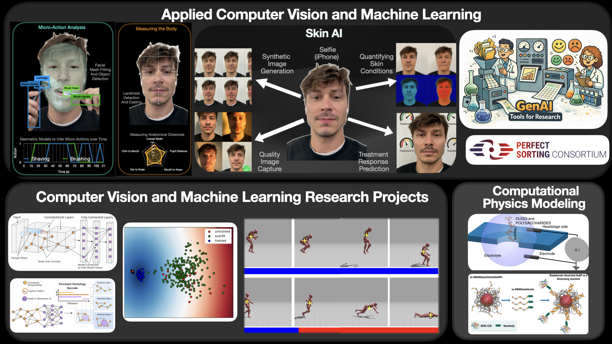
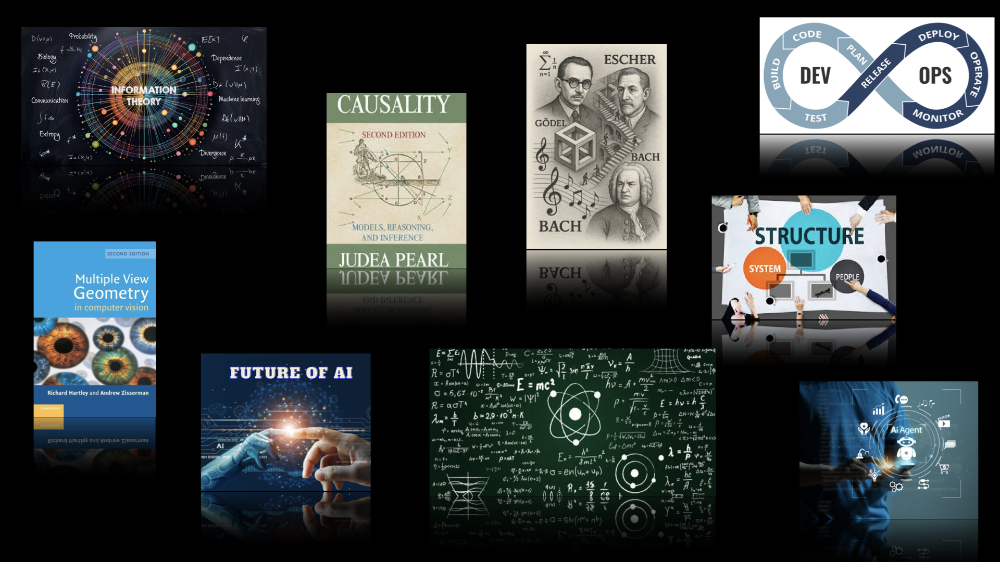
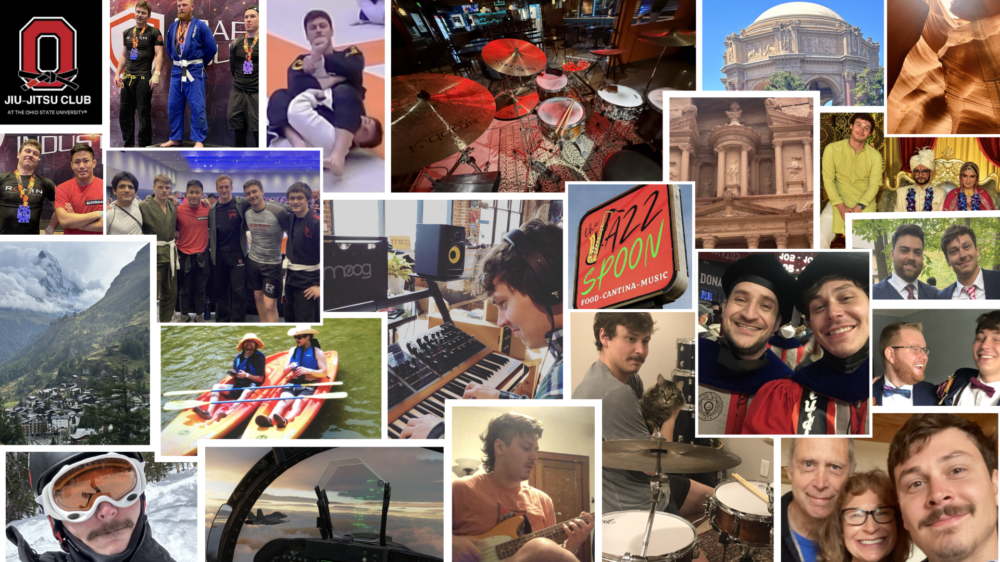

About Me:
I'm an applied-scientist focusing on computer vision, machine learning, and GenAI orchestrations. In other words... I build AI tools. I also really enjoy physics and math.
I am a first-principles thinker who ships working prototypes. I love collaborating with smart, hardworking people. I enjoy seeing my projects bring value to people. I also like writing short python scripts that outperform deep learning models.
Currently: Corporate R&D at Procter and Gamble
Focus: Applied ML / Computer Vision / GenAI Platforms and Tools
Values: integrity, curiosity, humility, initiative, sincere attempts at excellence, humor
How I Work
Start from first principles; measure what matters; ship iteratively. Prefer small, well-crafted tools that compound over time. Care about reliability, evaluation, and making results explainable to non-ML stakeholders.
Work Experience
-
Senior Data ScientistProcter & Gamble R&D - Discovery and Innovation Platforms (2024–Present)
Building Custom GenAI Platforms and Tools for Clinical Research/Consumer Research/Internal Knowledge Activation. I am also building Custom ML/CV tools to further our understanding of skin.
Data ScientistProcter & Gamble R&D Data & Modeling Sciences (2022–2024)Built CV systems for skin image quality, perception analysis, and behavioral quantification; delivered end-to-end from idea to deployment.
Graduate ResearcherThe Ohio State University - Electrical and Computer Engineering (2017–2021)Conducted Research in computer vision & machine learning; also worked as a teaching assistant.
NSF Physics REULehigh University (Summer 2016)Computational Biophysics
Undergraduate Researcher & Teaching AssistantClarkson University (2015–2017)Undergraduate Researcher - Computational Biophysics (2015–2017), Undergraduate Physics TA (2016–2017), and Calculus/DiffEq Tutor (2015).
Projects
I’ve had the chance to work on a pretty wide range of projects that sit at the intersection of research and real-world impact. Most of my work lives in applied AI, machine learning, and computer vision, but some of my AI research pull-ideas from cognitive science and topological data analysis. I also had the chance to work on some computational biophysics projects when I was younger.
See More about My ProjectsRandom Thoughts
This section is a place for me to think out loud about AI, learning, and building things that actually work. I write about technical ideas, career strategy, and a few broader observations that don’t fit neatly anywhere else.
See More Random ThoughtsPersonal
On a Personal Note
When I’m not burning my brain keeping up with the latest AI developments, I keep myself busy with a handful of hobbies.
Music is a big one. Drums are my main instrument, and I’ve been playing my whole life. I’m also an aspiring pianist, bassist, and audio engineer. I listen to pretty much everything, but I absolutely love jazz (fun fact: Herbie Hancock is an electrical engineer). I do my best to keep up with friends who actually went to music school. When I’m not getting called to sub on gigs, I help host a weekly jam session at The Jazz Spoon — Thursdays at 8pm. Jazz, R&B, hip-hop, neo-soul. Come hang.
To stay in shape, I train jiu-jitsu. I love the sport and train often. I compete occasionally, even though I usually get humbled by college wrestlers. Character building.
I also get to travel a fair amount, and whenever possible I’m snowboarding or exploring somewhere new.
When I have downtime, I’m usually gaming or building things. I built a VR flight simulator with my brother (DCS). Not to brag, but I can land an F/A-18 on an aircraft carrier. I’m also into comedy, building computers, and flying model airplanes and drones.